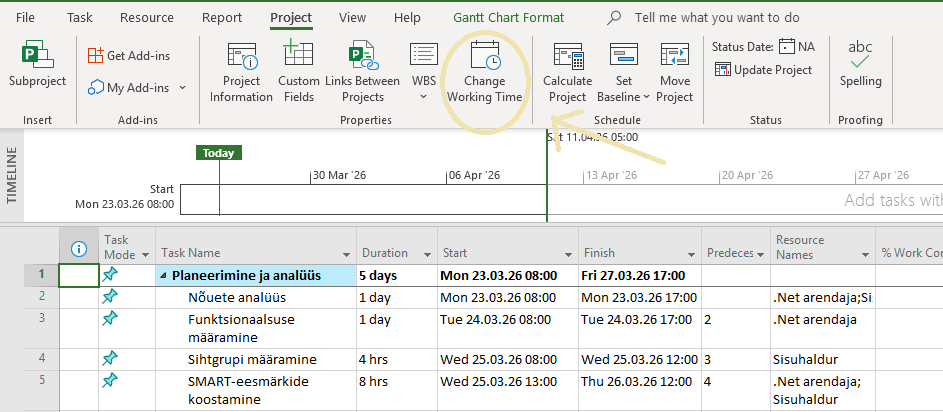
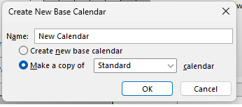
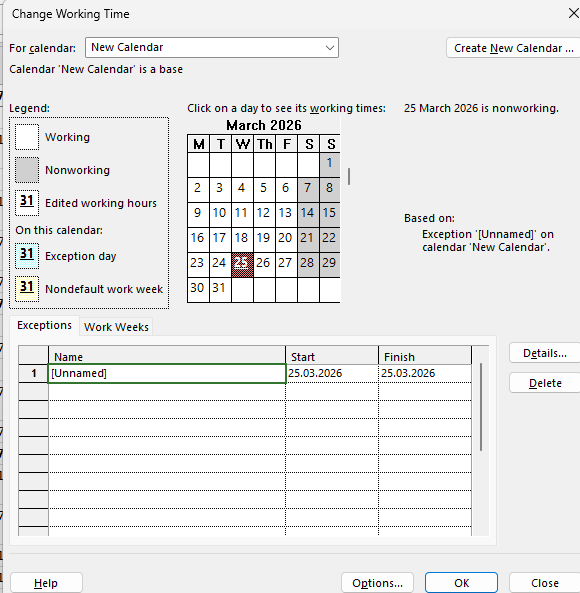

Mis on kalender Microsoft Project'is?
Microsoft Project kasutab kalendreid, et määrata, millal töö saab toimuda. Kalender määrab tööpäevad, tööajad ning puhkepäevad. Ilma korrektse kalendrita võib teie projekt planeerida ülesandeid nädalavahetustele või pühadele.
Project'is on kolme tüüpi kalendreid:
Projekti kalender
Rakendub kogu projektile vaikimisi. Kõik ülesanded järgivad seda kalendrit, kui pole teisiti määratud.
Ressursi kalender
Määrab üksiku töötaja töögraafiku — näiteks osalise tööajaga töötaja või teises ajavööndis asuv kolleeg.
Ülesande kalender
Rakendub konkreetsele ülesandele. Kasulik, kui ülesanne toimub väljaspool tavapärast tööaega (nt öövahetused).
Uue kalendri loomine
Uue kalendri loomiseks avage Change Working Time dialoog. See asub menüüs Project → Properties → Change Working Time.
- 1Avage menüüst
Project→Properties→Change Working Time

- 2Vajutage nuppu
Create New Calendar...paremas ülanurgas

- 3Avaneb dialoog "Create New Base Calendar"

- 4Valige "Create new base calendar" või "Make a copy (Kalendar_nimi)"
- 5Vajutage OK — uus kalender on loodud!
Tööaegade muutmine
Pärast kalendri loomist tuleb määrata tööpäevad ja tööajad. Vaikimisi on tööpäevad esmaspäevast reedeni, kell 08:00–12:00 ja 13:00–17:00.
| Name | Start | Finish |
|---|---|---|
| [Default] | NA | NA |
| From | To |
|---|---|
| 08:00 | 12:00 |
| 13:00 | 15:00 |
- 1Avage vahekaart
Work Weeks - 2Valige rida
[Default]ja vajutageDetails... - 3Avaneb Details paneel, kus saate valida iga päeva ja muuta tööaegu
- 4Reede lühendamiseks: valige Friday, muutke lõpuaeg
15:00-ks - 5Vajutage OK muudatuste salvestamiseks

Eripäevade lisamine
Eripäevad (Exceptions) on konkreetsed kuupäevad, mis erineva töögraafikuga — riigipühad, ettevõtte puhkepäevad, või lühendatud tööpäevad.
| Name | Start | Finish |
|---|---|---|
| 🎄 Jõulupüha | 25.12.2025 | 25.12.2025 |
| 🎉 Teine jõulupüha | 26.12.2025 | 26.12.2025 |
| 🏖️ Suvepuhkus | 01.07.2025 | 31.07.2025 |
- 1Avage vahekaart
Exceptions - 2Klõpsake tühjale reale veerus Name ja tippige puhkepäeva nimi
- 3Sisestage Start ja Finish kuupäevad
- 4Vajutage
Details..., et valida, kas päev on töövaba (Nonworking) või lühendatud tööajaga - 5Korrake iga puhkepäeva jaoks ja vajutage OK
Eesti riigipühad (näidis lisamiseks)
Kalendri kasutamine projektis
Loodud kalender tuleb projektile rakendada. Selleks kasutatakse Project Information dialoogi.
- 1Avage
Project→Properties→Project Information - 2Leidke väli Calendar
- 3Valige ripploendist
Meie ettevõte 2025 - 4Vajutage OK — projekt kasutab nüüd teie loodud kalendrit
Resource Sheet vaatesse → topeltklõpsake ressursil → vahekaardil General leidke väli Base Calendar.Kuidas kalender mõjutab ajakava?
Kalender on otseselt seotud kõigi ülesannete kestustega. Siin on praktilised näited:
Ülesande kestus
5-päevase kestusega ülesanne arvestab ainult tööpäevi. Kui vahepeal on riigipüha, lükkub lõpukuupäev automaatselt edasi.
Sõltuvused
Omavahel seotud ülesanded (Finish-to-Start) arvutavad järgmise ülesande alguse lähtuvalt töögraafikust.
Ressursi ülekoormus
Kui ressursi kalender erineb projekti omast (nt osalise tööajaga töötaja), arvestab Project töökoormust vastavalt ressursi töögraafikule.
Kriitiline tee
Kalendrimuutused võivad muuta kriitilist teed — projekti lõpukuupäev võib muutuda isegi siis, kui te ühtegi ülesannet ei muuda.
✅ Kokkuvõte — Mida oleme õppinud
- Kuidas avada Change Working Time dialoogi
- Kuidas luua uus baaskalender nimega
- Kuidas muuta tööpäevi ja -aegu — Work Weeks → Details
- Kuidas lisada riigipühi — vahekaart Exceptions
- Kuidas rakendada kalender projektile — Project Information
- Kuidas kalender mõjutab ülesannete kestust ja projekti lõppkuupäeva